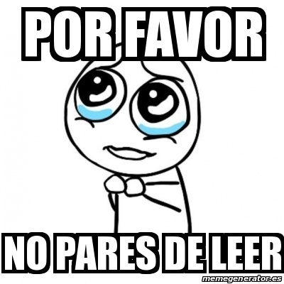

Bienvenidos a mi pagina, donde encontraran unas historia basada en hechos reales. 100 por ciento real no fake
Introduccion Estas es una historia basada en hechos reales, esta historia trata sobre mi viaje a los Estados Unidos el 2018 y todas las aventuras, problemas momentos alegres que vivi en ese viaje. entonces preparen sus palomitas que arrancamos
